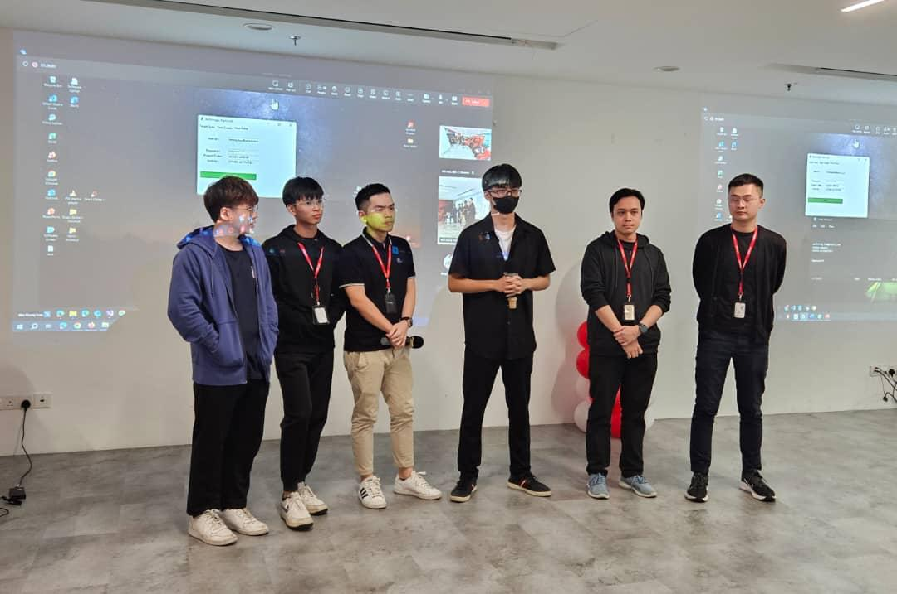
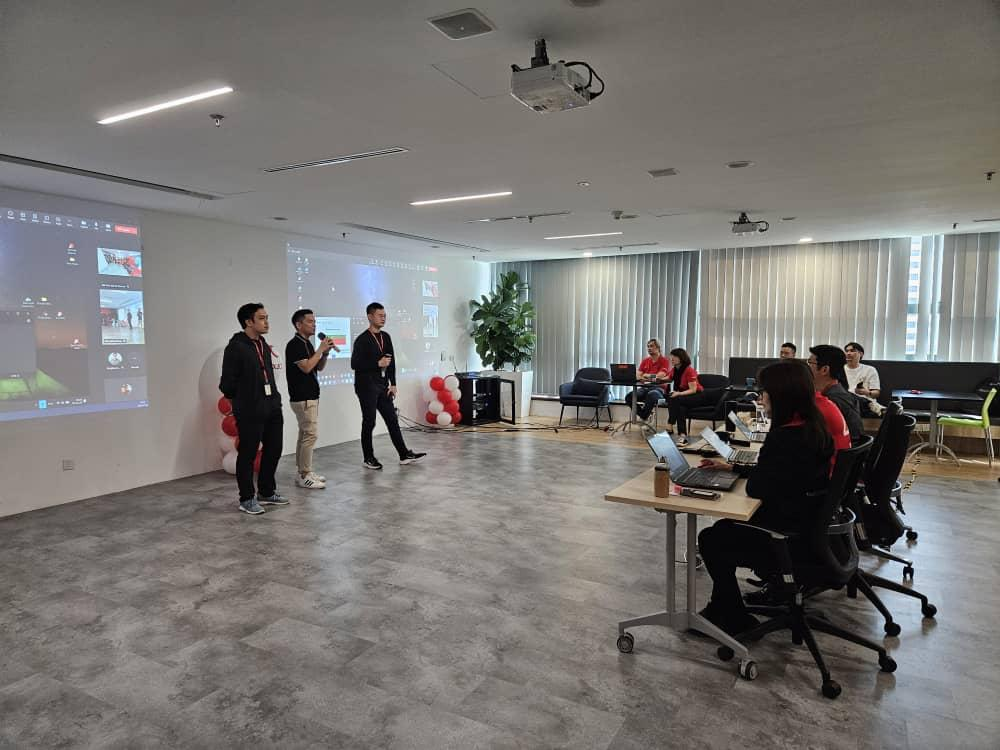
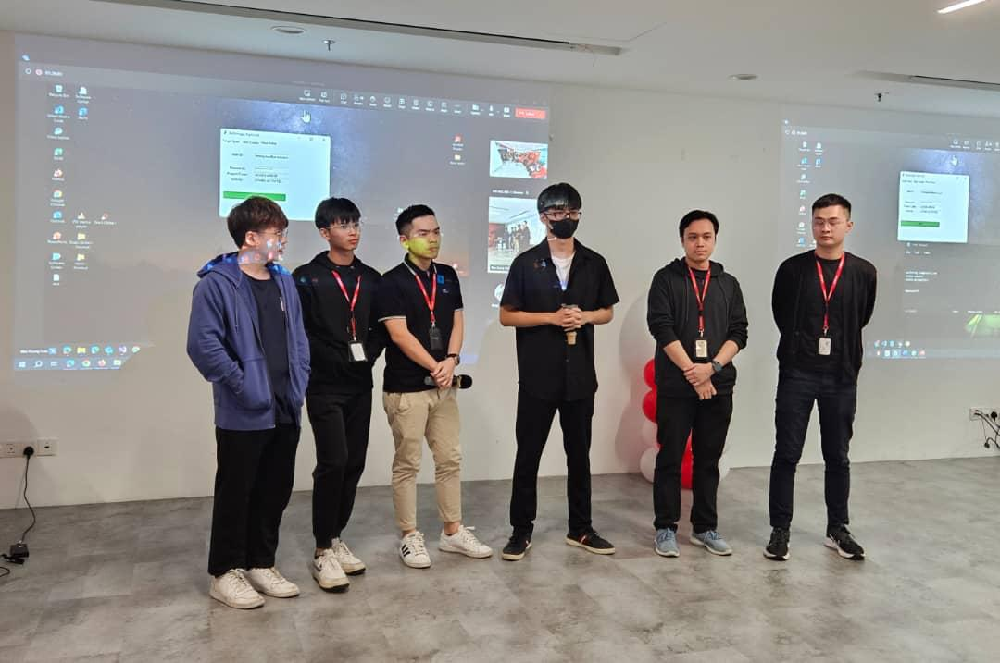
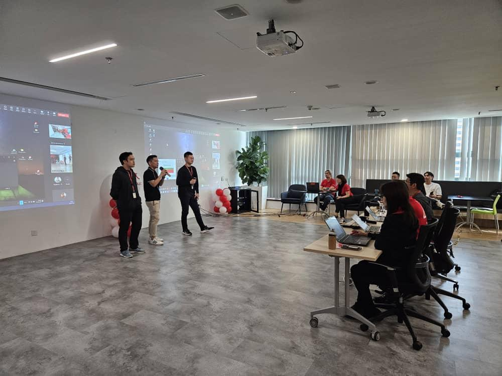

About Me

As a Bachelor of IT, I gained valuable experience with testing ERP software, deepening my understanding of manual testing methodologies. I developed strong analytical and problem-solving skills and designed and executed comprehensive test plans to ensure high-quality software. My ability to work independently and as part of a team makes me a valuable asset to any organization. Additionally, I have programming skills in various languages including HTML, JavaScript, and Java and etc, which enable me to contribute effectively to software development and testing processes.
 


